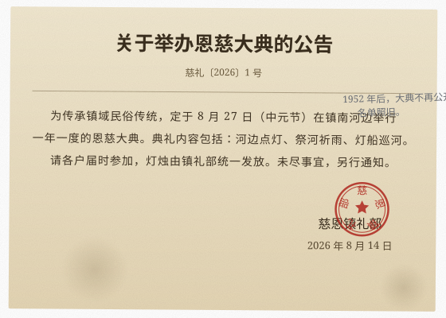
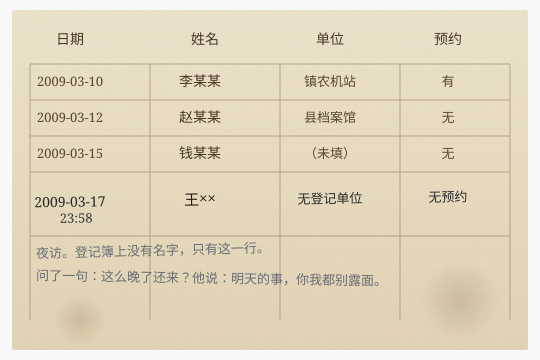

慈恩镇档案管理办公室持续推进馆藏档案数字化修复工作
慈恩镇馆藏档案
数字化修复工程 · 第五批档案文献遗产
▶ 慈恩镇特大案件卷宗（2008-2009）数字化修复工作正在推进2026-08-05
县公安局配合档案办完成历年未结案件卷宗移交，含2009年槐树街林某失踪案2026-08-04
国家档案局调研组赴慈恩镇指导档案保护工作2026-08-03
慈恩镇档案管理办公室召开2026年度工作会议2026-07-28
浙江省档案局印发《关于进一步加强历史档案保护的通知》2026-07-20
慈恩镇启动第五批馆藏档案数字化扫描工程2026-07-15
我办荣获2025年度全省档案工作先进集体2026-06-30
槐树街三号档案库房完成恒温恒湿系统升级改造2026-06-22
距恩慈大典还有 — 天2026-08-27
关于举办恩慈大典的公告 ▸2026-08-14
为传承镇域民俗传统，定于 8 月 27 日（中元节）在镇南河边举行一年一度的恩慈大典。典礼内容包括：河边点灯、祭河祈雨、灯船巡河。请各户届时参加，灯烛由镇礼部统一发放。未尽事宜，另行通知。

关于开展2026年度馆藏档案整理工作的通知2026-08-03
慈恩镇志（2009-2024）修订意见征集2026-07-18
关于部分历史档案暂停借阅的通告2026-06-05
关于举办档案修复技术培训班（第三期）的通知 ▸2026-03-15
为提升我镇档案修复技术水平，现定于2026年3月举办第三期培训班，共12学时，主要内容为纸浆补洞、脱酸加固及数码修复技术。
附：本期学员名单（部分）——王守诚、刘慧兰、周建民、林远（旁听）、赵敏、郑文斌……
2009年度老旧卷宗数字化修复项目启动通知2026-05-12
关于规范档案查阅登记制度的通知2026-03-20
慈恩镇户籍档案（1952-1980）增设在线检索入口2026-08-06
土地批文与地籍资料（1983-2001）完成数字化扫描2026-07-25
关于完成2009年度失踪人口档案补录工作的通知 ▸2026-06-30
我办于2026年6月完成2009年度失踪人口档案补录工作，共补录相关档案1件（编号：05）。该档案此前因故未纳入馆藏目录，现已整理归档。补录登记人：档案修复室（xf001）。因涉及个人隐私，档案内容仅限内部查阅。
民政救助与优抚档案（1970-2008）扩容索引库2026-07-10
慈恩镇河流治理与水文观测记录开放查阅2026-06-18
教会活动备案记录（1965-1998）整理完毕2026-05-25
查阅须知：部分老旧档案在数字化过程中出现数据损坏（如编号05号卷宗），如需查阅请携带有效证件至槐树街7号三楼档案修复室申请。在线查阅编号01-04及06档案可直接访问。
工作动态
中央和国家机关档案工作第十一协作组在慈恩镇开展集体学习活动2026-08-01
慈恩镇档案库房新增三组密集架，馆藏容量提升30%2026-07-22
省档案局对我镇档案保管工作进行专项督查2026-07-08
档案保管科完成2025年度馆藏盘点工作2026-06-15
慈恩镇档案管理办法（修订版）正式施行2025-12-01
▶ 编号05档案修复项目：2009年度卷宗数据恢复工作取得阶段性进展2026-08-07
档案修复室引进新型纸浆补洞机，提升修复效率2026-07-30
2009年度老旧卷宗数字化修复项目启动2026-05-12
慈恩镇三孔桥水文档案抢救性修复完成2026-04-20
举办档案修复技术培训班（第三期）2026-03-15
第五批馆藏档案数字化扫描工程完成60%2026-08-04
档案数据库升级至V3.0版本，检索响应速度提升2026-07-19
在线查阅平台新增户籍档案检索功能2026-06-28
信息技术科完成馆藏档案元数据标准化工作2026-06-01
网络信息安全等级保护测评通过2026-05-18
慈恩镇地方志编纂志愿者招募通知2026-07-05
面向社会征集慈恩镇老照片及历史文献2026-06-12
接受市民捐赠民国时期慈恩镇地契一批2026-04-28
档案接收征集科赴杭州征集相关历史档案2026-03-08
重点馆藏
慈恩镇户籍档案（1952-1980）43卷
土地批文与地籍资料（1983-2001）28卷
教会活动备案记录（1965-1998）17卷
民政救助与优抚档案（1970-2008）35卷
▶ 特大案件卷宗（2008-2009）待修复
（2009-005 已归档，不在公开列表）待修复
来访登记簿（2009-03）：3月17日 23:58 王××（无登记单位，无预约）
在册
水利工程建设档案（1985-2015）22卷
����� 槐树街调查记录 ���数�据异常
机构概况
机构简介
慈恩镇档案管理办公室成立于1952年，是慈恩镇人民政府直属事业单位，负责全镇各类档案的收集、整理、保管、利用及数字化工作。现有馆藏档案约12万卷（件），涵盖户籍、土地、民政、水利、教育等多个门类。近年来持续推进档案信息化建设，已完成1980年前馆藏档案的数字化扫描工作，并开通在线查阅平台。
领导信息
| 姓名 | 职务 | 分管工作 |
|---|
| 陈守正 | 主任 | 主持全面工作 |
| 刘慧兰 | 副主任 | 分管档案保管与修复 |
| 周建民 | 副主任 | 分管信息化与公共服务 |
内设机构
| 部门 | 主要职责 | 内部编号 |
|---|
| 档案接收征集科 | 负责档案接收、征集及社会捐赠档案的鉴定入馆 | js001 |
| 档案保管科 | 负责馆藏档案的分类编目、排架管理及温湿度监控 | bg001 |
| 档案修复室 | 负责破损、霉变档案的修复与抢救工作 | xf001 |
| 档案利用服务科 | 负责档案查阅接待、咨询服务及在线平台运维 | ly001 |
| 信息技术科 | 负责档案数字化、数据库建设及网站维护 | xx001 |
联系方式
办公地址：慈恩镇槐树街7号
查阅服务时间：周一至周五 8:30-12:00 14:00-17:30
联系电话：0571-XXXXXXX
电子邮箱：archive@cizhen.gov.cn
档案修复室位于三楼西侧，来访请提前预约。
慈恩镇网站群
以下单位网站均为慈恩镇人民政府下属机构站点。部分单位网站正在改版中，敬请谅解。
| 单位 | 网址 | 状态 |
|---|
| 慈恩镇人民政府 | www.cizhen.gov.cn | 建设中 |
| 慈恩镇档案管理办公室 | archive.cizhen.gov.cn | 正常 |
| 慈恩镇水利站 | sl.cizhen.gov.cn | 建设中 |
| 慈恩镇文教办 | wjb.cizhen.gov.cn | 建设中 |
| 慈恩镇公安派出所 | gaj.cizhen.gov.cn | 建设中 |
| 慈恩镇卫生院 | wsy.cizhen.gov.cn | 建设中 |
| 慈恩镇粮站 | lz.cizhen.gov.cn | 建设中 |
＊ 网群页面以 1998 年版本为基准进行维护，页面样式可能较为老旧。
在线档案查询
支持按编号（如 03）、关键词（如 户籍）、年份（如 2009）检索。部分档案因数据损坏暂不支持在线查阅。
查阅指南
步骤一：在检索框输入档案编号或关键词。
步骤二：查看检索结果，点击目标档案条目。
步骤三：如档案可在线查阅，直接浏览；如提示"数据损坏"，请携带有效证件至三楼修复室申请查阅。
注意：编号05号档案因数字化过程中数据损坏，暂不支持在线查阅。该档案涉及2009年相关卷宗。
补充条款（2009-03 修订）：
新闻动态
国家档案局调研组赴慈恩镇指导工作2026-08-03
慈恩镇档案管理办公室召开2026年度工作会议2026-07-28
浙江省档案局印发《关于进一步加强历史档案保护的通知》2026-07-20
慈恩镇启动第五批馆藏档案数字化扫描工程2026-07-15
我办荣获2025年度全省档案工作先进集体2026-06-30
工作动态
中央和国家机关档案工作第十一协作组在慈恩镇开展集体学习2026-08-01
▶ 编号05档案修复项目取得阶段性进展2026-08-07
第五批馆藏档案数字化扫描工程完成60%2026-08-04
档案修复室引进新型纸浆补洞机2026-07-30
档案库房新增三组密集架2026-07-22
法规标准库
法律法规
《中华人民共和国档案法》（2020修订）
《中华人民共和国档案法实施条例》
《中华人民共和国保守国家秘密法》
《档案解密与公开暂行办法》（2018修订）
《浙江省档案管理条例》
业务标准
DA/T 1-2000 档案工作基本术语
DA/T 31-2017 纸质档案数字化技术规范
GB/T 18894-2016 电子文件归档与电子档案管理规范
互动交流
常见问题
如何查阅馆藏档案？——请持本人身份证件至槐树街7号
哪些档案可以在线查阅？——编号01-04及06可通过网站直接访问
档案数据损坏怎么办？——请携带介绍信至三楼档案修复室申请
如何向档案馆捐赠历史资料？——请联系档案接收征集科
在线留言
王** 2026-07-28 14:22
请问 2009 年的补录档案可以网上查阅吗？
档案科回复：请携带有效证件至槐树街7号三楼档案修复室申请。
张** 2026-08-02 09:47
1980 年前的户籍档案可以网上查吗？
档案科回复：1980 年前户籍已上线，可在线检索。
匿名 2026-08-05 23:11
三楼档案修复室，现在还上班吗？
档案科回复：该留言已由系统自动回复。
匿名 2026-08-07 01:36
有人注意到，网站上的日期和今天不一样吗？
（该留言已标记待审核）
匿名 2026-08-09 03:04
别搜「林远」。
（该留言已标记待审核）
匿名 2026-08-11 03:02
他让我替他值个班。就一晚。
（该留言已标记待审核）
＊ 留言板将于 2026-08-27 起暂停服务，另行通知。
联系方式
办公地址：慈恩镇槐树街7号
咨询电话：0571-XXXXXXX
电子邮箱：archive@cizhen.gov.cn
工作时间：周一至周五 8:30-12:00 14:00-17:30